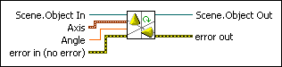

Rotate Object VI
Owning Palette: Transformations VIs
Requires: Full Development System
Rotates an object in a 3D scene by the values Axis and Angle. This VI performs a relative rotation from the object's current position.

 Add to the block diagram Add to the block diagram |
 Find on the palette Find on the palette |